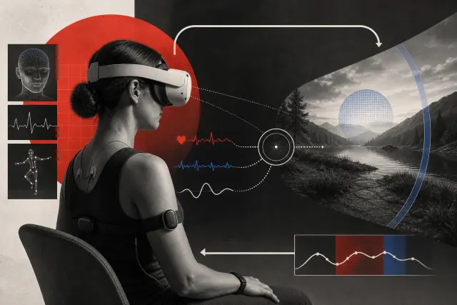

01In development
Human-in-the-loop XR
A training system that senses when to push—and when to pause.
A lightweight XR system combines gaze, physiology and movement to estimate individual state, adjust embodied training intensity, and keep every intervention inside a visible safety boundary.
- Multimodal sensing
- Adaptive XR
- Psychological wellbeing